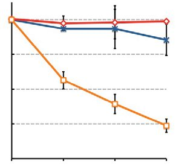
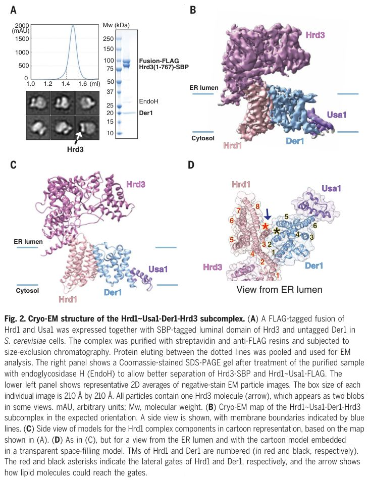
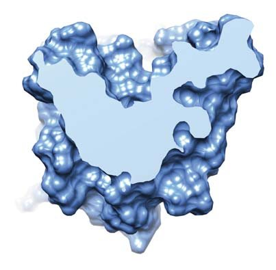
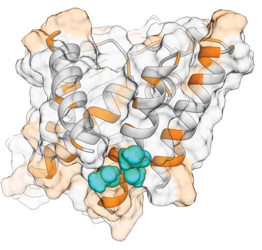
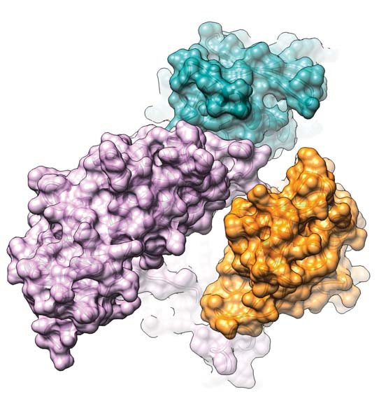
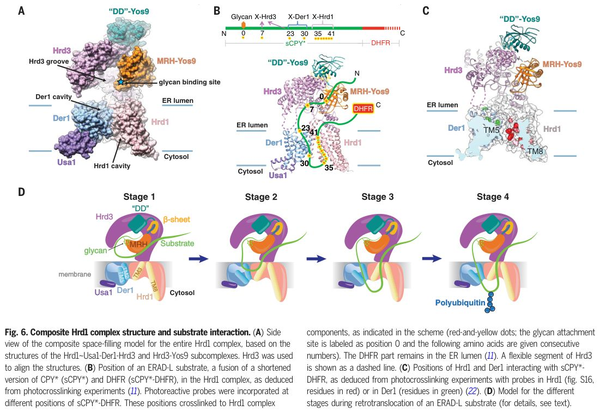

Protein Structure Determination
Structural basis of ER-associated protein degradation mediated by the Hrd1 ubiquitin ligase complex
Abstract
Misfolded luminal endoplasmic reticulum (ER) proteins undergo ER-associated degradation (ERAD-L): They are retrotranslocated into the cytosol, polyubiquitinated, and degraded by the proteasome. ERAD-L is mediated by the Hrd1 complex (composed of Hrd1, Hrd3, Der1, Usa1, and Yos9), but the mechanism of retrotranslocation remains mysterious. Here, we report a structure of the active Hrd1 complex, as determined by cryo-electron microscopy analysis of two subcomplexes. Hrd3 and Yos9 jointly create a luminal binding site that recognizes glycosylated substrates. Hrd1 and the rhomboid-like Der1 protein form two "half-channels" with cytosolic and luminal cavities, respectively, and lateral gates facing one another in a thinned membrane region. These structures, along with crosslinking and molecular dynamics simulation results, suggest how a polypeptide loop of an ERAD-L substrate moves through the ER membrane.
INTRODUCTION:
Protein homeostasis in the endoplasmic reticulum (ER) is maintained by a quality control system. When a newly synthesized ER protein misfolds, it is ultimately retrotranslocated into the cytosol, polyubiquitinated, and degraded by the proteasome, a pathway referred to as ER-associated protein degradation (ERAD). ERAD alleviates cytotoxic stress imposed by protein misfolding and is implicated in numerous diseases. ERAD is found in all eukaryotic cells but is best studied for the ERAD-L pathway in Saccharomyces cerevisiae, which disposes of misfolded glycoproteins in the ER lumen. The glycan attached to these proteins is first trimmed by glycosidases to generate a terminal a1,6-mannose residue. This residue, together with an unfolded polypeptide segment, targets the substrate to the Hrd1 complex, which is composed of the multispanning ubiquitin ligase Hrd1 and four additional proteins (Hrd3, Der1, Usa1, and Yos9). The Hrd1 complex mediates the retro-translocation of the polypeptide into the cytosol, where it is polyubiquitinated, extracted from the membrane by the Cdc48 adenosine triphosphatase complex, and, finally, degraded by the proteasome.
RATIONALE:
The mechanism of ERAD-L remains poorly understood. Arguably the most mysterious aspect is how misfolded proteins cross the ER membrane, which normally presents a barrier to macromolecules. How ERAD-L substrates are recognized and distinguished from properly folding intermediates is also unclear. Answers to these questions require structural information on the Hrd1 complex.
RESULTS: Here, we report a structure of the active Hrd1 complex from S. cerevisiae, as determined by cryo-electron microscopy (cryo-EM) analysis of two subcomplexes. Our structures, biochemical data, and experiments in vivo indicate that the Hrd1 complex functions as a monomer in ERAD-L. Hrd3 and Yos9 jointly create a luminal binding site that recognizes misfolded glycoproteins. The a1,6-mannose residue binds to the mannose 6-phosphate receptor homology (MRH) domain of Yos9, and the polypeptide segment downstream of the glycan attachment site is likely accommodated in a groove of the luminal domain of Hrd3. Hrd1 and the rhomboid-like Der1 protein are linked by Usa1 on the cytosolic side of the membrane. Both Der1 and Hrd1 have lateral gates that face one another within the membrane and possess luminal and cytosolic cavities, respectively. Both proteins distort the membrane region between the lateral gates, making it much thinner than a normal phospholipid bilayer, an observation supported by molecular dynamics simulations. The structures and photocrosslinking experiments indicate that the retro-translocation of an ERAD-L substrate is initiated by loop insertion of the polypeptide into the membrane, with one strand of the loop interacting with Der1 and the other with Hrd1.
CONCLUSION:
Our results lead to a model for the mechanism of retro-translocation through the Hrd1 complex. The pathway across the membrane is formed by two "half-channels" corresponding to the luminal and cytosolic cavities of Der1 and Hrd1, respectively. These half-channels are juxtaposed in a thinned membrane region. The substrate inserts into the retrotranslocon as a hairpin that is hydrophilic on both sides. These features contrast with the Sec61 channel, which accepts substrates with a hydrophobic signal or transmembrane segment forming one side of the loop. This segment exits the lateral gate into the lipid environment and is not translocated, while the other side of the loop moves through the membrane in an entirely hydrophilic environment. The structural features of the retrotranslocon can facilitate movement of a fully hydrophilic substrate through a thinned and thus distorted membrane, a paradigm that may be replicated in other protein translocation systems. ▪ Misfolded luminal endoplasmic reticulum (ER) proteins undergo ER-associated degradation (ERAD-L): They are retrotranslocated into the cytosol, polyubiquitinated, and degraded by the proteasome. ERAD-L is mediated by the Hrd1 complex (composed of Hrd1, Hrd3, Der1, Usa1, and Yos9), but the mechanism of retro-translocation remains mysterious. Here, we report a structure of the active Hrd1 complex, as determined by cryo-electron microscopy analysis of two subcomplexes. Hrd3 and Yos9 jointly create a luminal binding site that recognizes glycosylated substrates. Hrd1 and the rhomboid-like Der1 protein form two "half-channels" with cytosolic and luminal cavities, respectively, and lateral gates facing one another in a thinned membrane region. These structures, along with crosslinking and molecular dynamics simulation results, suggest how a polypeptide loop of an ERAD-L substrate moves through the ER membrane.
N
ewly synthesized secretory and membrane proteins undergo quality control in the endoplasmic reticulum (ER), to ensure that only properly folded proteins become resident in the ER or are moved on along the secretory pathway. When a protein does not reach its native folded state, it is ultimately retrotranslocated into the cytosol, polyubiquitinated, and degraded by the proteasome. This pathway is referred to as ER-associated protein degradation (ERAD) and is conserved in all eukaryotes [reviewed in (1,2)]. ERAD alleviates cytotoxic stress imposed by protein misfolding and is implicated in numerous diseases (3). The pathway also plays a role in the regulated degradation of endogenous ER proteins (4, 5) and is hijacked by certain viruses and toxins (5,6). In Saccharomyces cerevisiae, ERAD of misfolded luminal ER proteins (ERAD-L) requires the Hrd1 complex, consisting of the RING-finger ubiquitin ligase Hrd1 and four additional proteins (Hrd3, Usa1, Der1, and Yos9), each of which is conserved in higher organisms (7)(8)(9)(10). Hrd1 is a multispanning membrane protein that can mediate retro-translocation in the absence of the other components when overexpressed or when reconstituted into proteoliposomes (11,12). Hrd1 is activated by autoubiquitination within its RING-finger domain (12). In wild-type cells, Hrd1 associates on its luminal side with Hrd3 and on its cytosolic side with Usa1, which in turn recruits the multispanning membrane protein Der1 (8,(13)(14)(15). Yos9 is a luminal protein that binds to Hrd3 (9,10).
The process of ERAD-L is best understood for glycoproteins and begins with the recognition of a misfolded polypeptide in the ER lumen [for review, see (2)]. When a misfolded glycoprotein lingers in the ER for too long, its N-linked glycan is trimmed by glycosidases to generate a terminal a1,6-mannose residue. This residue is then recognized by the mannose 6-phosphate receptor homology (MRH) domain of the Yos9 protein (16)(17)(18)(19)(20). In addition, an unfolded polypeptide segment is probably recognized by the luminal domain of Hrd3 (21). In the next step, a segment of the polypeptide substrate is inserted into and moved through the ER membrane, a process that requires both Hrd1 and Der1 (8,11,22). Once a polypeptide segment has arrived on the cytosolic side of the membrane, it is polyubiquitinated in a reaction catalyzed by Hrd1 (23). The ubiquitinated substrate is then moved from the ER membrane into the cytosol by the Cdc48 adenosine triphosphatase (ATPase) and its cofactor Ufd1-Npl4 for degradation by the proteasome [for review, see (24)].
The mechanism by which a polypeptide crosses the ER membrane remains mysterious, largely because structural understanding of the active Hrd1 complex is lacking. A cryo-electron microscopy (cryo-EM) structure of the Hrd1-Hrd3 subcomplex shows two Hrd1 molecules interacting within the mem-brane and two Hrd3 molecules bound to the luminal side of the Hrd1 dimer (25). Each Hrd1 molecule contains eight transmembrane (TM) segments and has a deep aqueous cavity on the cytosolic side of the membrane. A lateral gate toward the interior of the membrane is sealed by a TM segment of the neighboring Hrd1 molecule. The cavity could allow a retrotranslocating protein to exit into the cytosol, but how a substrate would enter the cavity in the first place remains unclear, because the cavity is closed toward the luminal side of the membrane. It also remains unclear how two intertwined Hrd1 molecules with nonconnected cavities can be involved in the process of membrane crossing. Moreover, the presence of a dimer of Hrd1-Hrd3 is at odds with the fact that Hrd1 oligomerization in vivo requires Usa1 (11,13). Finally, the structure lacks the carbohydrate-recognizing component Yos9 as well as Usa1 and Der1, which are all required for the retro-translocation of luminal glycoproteins. On the basis of amino acid sequence homology, Der1 is predicted to be an enzymatically inactive member of the rhomboid family of proteases (26), which cleave their membrane-spanning substrates inside the membrane (27,28). The significance of the relationship of Der1 with rhomboids for the mechanism of retro-translocation remains unclear.
Here, we present cryo-EM structures of two subcomplexes of the Hrd1 complex, which together helped us elucidate the architecture of the entire retrotranslocon. These structures and complementing crosslinking results, molecular dynamics (MD) simulations, and in vivo experiments enabled us to build a mechanistic model for how an ERAD-L substrate is recognized and moved through the ER membrane.
Hrd1 functions as a monomer in ERAD-L
The previously analyzed Hrd1-Hrd3 complex contains an Hrd1 fragment, including its Cterminal RING-finger domain, and the luminal domain of Hrd3 without its TM domain, a fragment that is fully functional in vivo (11). We purified this complex in the detergent decylmaltoside (DM) via a streptavidin-binding peptide (SBP) tag attached to Hrd3, using streptavidin beads (25). In size-exclusion chromatography, some of the protein eluted as a dimer of the Hrd1-Hrd3 complex (fig. S1A), and this fraction was used for the previous cryo-EM analysis (25). However, we noticed that a considerable population of Hrd3 dissociated from the complex (fig. S1A). When the detergents decylmaltose neopentylglycol (DMNG) or laurylmaltose neopentylglycol (LMNG) were used, there was much less Hrd3 dissociation (fig. S1A). Negative-stain EM showed that the DM-solubilized complex contained two Hrd3 molecules (fig. S1B), as previously reported (25), whereas the DMNG-or LMNG-solubilized complexes contained only one Hrd3 molecule (fig. S1B). In addition, the DM-solubilized dimeric Hrd1-Hrd3 complex exhibited significantly lower polyubiquitination activity than the DMNG-solubilized monomeric complex, as shown by assays with the purified ERAD-L substrate carboxypeptidase Y* (CPY*) (fig. S1C). Thus, the instability and low activity of the previously characterized DM-solubilized dimeric Hrd1 complex raise the possibility that the dimer may not represent the active species.
To obtain a cryo-EM structure of monomeric Hrd1-Hrd3, the complex was solubilized in DMNG and purified in a digitonin-lipid mixture with streptavidin beads, followed by gel filtration. The complex was homogeneous and contained the two proteins in stoichiometric quantities (fig. S1D). The monomeric state of the purified Hrd1-Hrd3 complex was confirmed by determining a cryo-EM structure with an overall resolution of 4.3 Å (Fig. 1A; fig. S1, E to I; and table S1). A model for the luminal domain of Hrd3, derived from the structure of the dimeric Hrd1-Hrd3 complex (25), fit into the map with only minor modifications (Fig. 1A). The Hrd1 region comprising TMs 3 to 8 could also be docked with few adjustments, indicating that the cytosolic cavity is maintained (fig. S2A). The lateral gate of Hrd1, located between TMs 3 and 8, is open toward the interior of the membrane, whereas it was covered by TM1 of a neighboring Hrd1 molecule in the previous structure (25). The RING-finger domain of Hrd1 was still invisible, likely because it is flexible. In both structures, the interaction between Hrd3 and Hrd1 is mediated by a helix in the loop between TMs 1 and 2 of Hrd1 (fig. S2A). However, TMs 1 and 2 themselves undergo considerable movement (fig. S2A), resulting in a revised assignment of the membrane boundaries (fig. S2B, solid versus dashed lines). With the correct boundaries, one of the Hrd3 molecules in the dimeric complex would be located inside the membrane, which is extremely unlikely. Thus, although the individual structures of Hrd1 and Hrd3 are largely correct, an assembly of two Hrd1 and two Hrd3 molecules, as seen in the previous structure, is nonphysiological. It seems that the use of an inappropriate detergent [DM or dodecylmaltoside (DDM)] led to the dissociation of Hrd3 from the complex and artifactual reassociation of the components. With the reassignment of the membrane boundaries, an amphipathic helix of Hrd3 and the hydrophilic segment that comes after it are no longer located deep inside the bilayer or micelle (fig. S2B), a placement that was puzzling (25). Now, this helix lies almost flat on the membrane surface (fig. S2B). Thus, the physiological Hrd1-Hrd3 complex appears to contain only one copy of each component.

Next, we set out to test whether Hrd1 can function as a monomer in ERAD-L. To this end, we generated a fusion between Hrd1 and Usa1, in which the segments required for oligomerization were deleted from both proteins (11, 13) (Fig. 1B). This construct also lacked the segments required for the association of Hrd1 and Usa1, but this was compensated for by the covalent linkage of the two proteins. To test whether the Hrd1~Usa1 fusion was indeed a monomer, we coexpressed FLAG-and hemagglutinin (HA)-tagged versions of Hrd1 or the Hrd1~Usa1 fusion and tested their interaction by coimmunoprecipitation. Cell lysates were subjected to immunoprecipitation with FLAG antibodies, followed by SDS-polyacrylamide gel electrophoresis (SDS-PAGE) and immunoblotting with FLAG and HA antibodies (Fig. 1C). Consistent with previous results showing that Hrd1 forms Usa1-dependent oligomers (11, 13), FLAG-tagged Hrd1 coprecipitated HA-tagged Hrd1 in the presence of Usa1 (Fig. 1C, lane 4) but not in its absence (lane 5). Importantly, no coprecipitation was observed with FLAG-and HA-tagged Hrd1~Usa1 fusions in Usa1-lacking cells (lane 6), indicating that the fusion protein was monomeric.
To test the functionality of monomeric Hrd1Ũ sa1, we expressed the fusion protein from a low-copy centromere (CEN) plasmid under the endogenous Hrd1 promoter in S. cerevisiae cells lacking both Hrd1 and Usa1. cycloheximide-chase experiments showed that several established ERAD-L substrates (CPY*, KHN, KWW) (8, 29, 30) were degraded as efficiently as in cells coexpressing full-length Hrd1 and Usa1 as separate proteins (Fig. 1D). In contrast, coexpression of the nonfused, truncated versions of Hrd1 and Usa1 did not support substrate degradation (Fig. 1D). The Hrd1~Usa1 fusion still required Der1 for substrate degradation (Fig. 1E), indicating that it functions in the normal ERAD-L pathway. The fusion protein was also functional in the degradation of Hmg2, a substrate of the Hrd1-dependent ERAD-M pathway, which degrades proteins misfolded inside the membrane (Fig. 1F) (8). In this case, the coexpression of the truncated fusion partners also supported degradation, which is consistent with the observation that ERAD-M substrates often do not require Usa1 (8,31). To exclude the possibility that the fusion protein was only active because of its slight overexpression from a low-copy plasmid, we tested CPY* degradation in cells expressing Hrd1 or the Hrd1~Usa1 fusion from the endogenous Hrd1 locus, both with a FLAG tag at the C terminus. As expected, Hrd1-FLAG supported ERAD-L in wild-type but not in Usa1lacking cells (Fig. 1G). However, the fusion protein was fully functional in Usa1-lacking cells, even though its expression level was about the same as that of Hrd1-FLAG (Fig. 1G). Thus, Hrd1 can function as a monomer in ERAD-L.
Structure of the Hrd1~Usa1-Der1-Hrd3 subcomplex
We used the functional Hrd1~Usa1 fusion to obtain a structure of a subcomplex of the retrotranslocon that focuses on the membrane proteins. Yos9 was omitted to make the complex amenable to structural analysis. A FLAGtagged version of the Hrd1~Usa1 fusion protein was expressed together with untagged fulllength Der1 and SBP-tagged luminal domain of Hrd3. The complex was solubilized in DMNG and purified in a digitonin-lipid mixture with streptavidin and FLAG-antibody beads, followed by gel filtration. The complex was homogeneous and contained all proteins and only one copy of Hrd3 (Fig. 2A).

The purified Hrd1~Usa1-Der1-Hrd3 complex was subjected to cryo-EM analysis. Three-dimensional (3D) classification of the particle images resulted in two main classes (figs. S3 and S4 and table S1). After refinement, maps
A B C ER lumen Cytosol Usa1 Usa1 Der1 Der1 Hrd1 Hrd1 ER lumen Cytosol Usa1 Usa1 Der1 Der1 Hrd1 Hrd1 D Usa1 Usa1 Der1 Der1 Hrd1 Hrd1 Hrd3 Hrd3 1 1 2 2 3 3 6 6 5 5 4 4 1 2 3 4 5 6 7 8 Hrd3 Hrd3 Hrd3 Hrd3 250 150 100 75 50 37 25 20 15 10 Fusion-FLAG Der1 Mw (kDa) Hrd3(1-767)-SBP EndoH Hrd3 (mAU) (ml) 2000 1500 1000 500 1.0 0 1.2 1.4 1.6 at overall resolutions of 4.1 and 4.3 Å were obtained (Fig. 2B and figs. S3 and S4, A and B). The maps confirmed that the complex contains one molecule each of Hrd1, Hrd3, Usa1, and Der1. The Hrd1-Hrd3 region was essentially identical to that in the monomeric Hrd1-Hrd3 complex (fig. S2, C and D).
The two maps for the Hrd1~Usa1-Der1-Hrd3 complex differed drastically in the Der1-Usa1 region. The map with lower local resolution corresponds to the established topology of the proteins (13, 26, 32, 33) (Fig. 2, B and C, and fig. S4, A, C, and E). Unexpectedly, the map with higher resolution in this region corresponds to a flipped orientation of Der1-Usa1 relative to Hrd1-Hrd3 (fig. S4, B, D, and F). Although this orientation is unambiguously a biochemical artifact, the quality of the map for Der1 and Usa1 was superior. This map was therefore used to build an initial model for Der1, including the six TM segments and the loops between them; the model only lacks residues at the N and C termini (fig. S4D; examples of the model's fit into the map are shown in fig. S5). The final model is based on the density for large amino acid side chains, the predicted sequence boundaries of TMs, and the homology to the structure of the rhomboid protein glpG (34)(35)(36). The structure was further confirmed by evolutionary couplings after alignment of Der1 sequences from a large set of fungal species and energy minimization with the Rosetta program (37, 38) (fig. S6). The model derived from the map of the flipped complex was then docked into the map corresponding to the expected topology of Der1-Usa1. Only TM5 needed a major adjustment, as it is much closer to TM2 than in the inverted topology.
The map for the expected Der1-Usa1 topology showed density for three helices of Usa1 (Fig. 2, B to D), which form a C-terminal domain that mediates the interaction with Der1, as shown by pull-down experiments (fig. S7A). This domain was also essential for ERAD-L in vivo (fig. S7B). A model for this domain (positions 745 to 789) could be built on the basis of the map for the flipped Der1-Usa1 orientation (fig. S5E); it includes a hydrophobic helix (residues 760 to 780; labeled "HH") that interacts mainly with TM6 of Der1 (fig. S5E). The HH helix covers a hydrophilic patch of Der1 that otherwise would be exposed to the interior of the membrane (Fig. 2, B and C). Thus, Usa1 serves as a linker between Hrd1 and Der1, interacting through its N-terminal cytosolic region with Hrd1 (11, 13) and through its Cterminal cytosolic region with Der1 (fig. S7C). The two intervening TM segments are not essential, because their deletion had only a moderate effect on ERAD-L (fig. S7B).
Lateral gate and luminal cavity in Der1
As expected (26), the structure of Der1 is similar to the Escherichia coli rhomboid protein glpG, with both TMs and loops at approximately the same positions (Fig. 3, A and B). Like all rhomboid proteins, Der1 has a lateral gate, located between TMs 2 and 5 (asterisks in Fig. 3, A and B). In our structure with Der1-Usa1 in the expected orientation, the lateral gate is closed, with TM5 contacting TM2 (Fig. 3, A and B). This state resembles the closed states of E. coli and Haemophilus influenzae glpG (Fig. 3, A and B, and fig. S8, respectively), although TM5 has different tilt angles relative to the membrane plane in these structures. In this closed conformation, Der1 has a shallow hydrophilic cavity on the ER luminal side (Fig. 3C). In rhomboids, this cavity contains the active site and is initially covered by the TM5-TM6 loop (red segment in Fig. 3, A and B, and fig. S8). This loop moves away when the lateral gate opens by displacement of TM5, allowing the TM segment of a substrate to enter and access the active site (34)(35)(36)39). In Der1, the luminal cavity is not covered by the TM5-TM6 loop, because this loop is substantially shorter than in rhomboids (green segment in Fig. 3, A and B, and fig. S8). Thus, the cavity appears to be perpetually open. A short TM5-TM6 loop seems to be a conserved feature among all Der1 homologs (fig. S9A).

Local membrane thinning by Hrd1 and Der1
The region between the lateral gates of Der1 and Hrd1 corresponds to a drastically thinned membrane (Fig. 4, A and B). Indeed, the micelle in our map has a highly deformed shape with a pronounced depression on its cytosolic side between the lateral gates of Der1 and Hrd1 (Fig. 4C). The thickness of the micelle in this region is ~24 Å rather than, as elsewhere, ~40 Å (Fig. 4C).
Local membrane thinning was confirmed by all-atom MD simulations (Fig. 4D). The Hrd1-Der1 complex was placed without restraints into a lipid bilayer consisting of a 1:1 mixture of palmitoyl-oleoyl phosphatidylcholine (POPC) and dioleoyl phosphatidylcholine (DOPC). During the simulation period (1.2 ms), Der1 and the funnel-forming segments of Hrd1 (TMs 3 to 8) maintained their structures, although some movement of Hrd1's TMs 3 to 8 relative to RESEARCH | RESEARCH ARTICLE E F G ER lumen Cytosol 180°C ytosolic cavity of Hrd1 Hrd3 Hrd3 Hrd3 Hrd3 micelle micelle micelle micelle Hrd1 Hrd1 TM3 TM3 TM8 TM8 Der1 Der1 Hrd1 Hrd1 Hrd1 Hrd1 RESEARCH | RESEARCH ARTICLE Downloaded from https://www.science.org at Massachusetts Institute of Technology on July 26, 2026
S12A), suggesting some flexibility in this region. Importantly, the lipid bilayer was locally thinned in the region between the lateral gates, as indicated by the position of the phospholipid head groups (Fig. 4D, green balls). Calculation of the average head-group density confirmed that the distance between the head groups of the two bilayer leaflets was locally reduced (fig. S13A, dashed red oval). The distortion of the micelle is caused in part by Hrd1's hydrophilic cytosolic cavity and its lateral opening (Fig. 4, A and B). Hrd1 alone can cause local membrane thinning, as demonstrated by the distortion of the micelle close to the lateral gate in our monomeric Hrd1-Hrd3 structure (Fig. 4E, arrow). MD simulations of Hrd1 alone also showed that phospholipid head groups moved into the lateral gate (Fig. 4F, green balls), while Hrd1 maintained its structure (fig. S12B). Calculation of the average head-group density confirmed that the distance between the head groups of the two bilayer leaflets was reduced locally at the lateral gate (fig. S13B, dashed red oval). In MD simulations of Hrd1-Der1 and Hrd1, one phospholipid molecule had its polar lipid head group pointing toward the interior of the Hrd1 cavity, while its hydrocarbon tails protruded through the lateral gate into the membrane (fig. S13C). This lipid molecule thus lies almost parallel to the plane of the membrane, unlike phospholipids in a normal bilayer, and occupies a position similar to density seen in our cryo-EM maps (fig. S13D). This density could be modeled as a digitonin molecule (fig. S13D) and was absent in the previous dimer structure (fig. S13E).
The lateral gates of Der1 and Hrd1 face one another in the membrane (Fig. 2D, black and red asterisks) and are both accessible to surrounding lipid or detergent molecules (indicated by an arrow). A side view shows that Der1 and Hrd1 only interact at the luminal side of the membrane (Fig. 4A), mainly through residues in TM2 of Der1 and TM3 of Hrd1 (Fig. 2D). As a result, the two hydrophilic "half-channels," the luminal cavity of Der1 and the cytosolic cavity of Hrd1, come close to one another (Fig. 4B).

To confirm the interface between Hrd1 and Der1, we performed in vivo photocrosslinking experiments (fig. S10A) (11,40,41). Photoreactive benzophenone probes were incorporated at different positions of FLAG-tagged Hrd1 by suppression of amber codons. Photocrosslinks of Hrd1-FLAG to Myc-tagged Der1 were analyzed by immunoprecipitation with FLAG antibodies, followed by SDS-PAGE and immunoblotting with FLAG and Myc antibodies (fig. S10A). As predicted, positions in TM3 of Hrd1 gave the most prominent crosslinks (figs. S10B and S11A; residues in red). Previous photocrosslinking experiments with photoreactive probes in Der1 showed that residues at the luminal side of TMs 1 and 2 crosslink to Hrd1 (fig. S11B, residues in green) (22). In addition, residues in the loop between TM1 and TM2 of Der1 crosslinked to Hrd3 (fig. S11B, residues in yellow). All these crosslinking data support the structural model.
Der1 also contributes to local membrane thinning on the cytosolic side, because a cluster of several hydrophilic residues in the lateral gate helix TM2 is located within the boundaries of a normal lipid bilayer (Fig. 4, A and G). In addition, TM5 of Der1 is tilted with respect to the membrane normal and consists of only a short stretch of hydrophobic amino acids; its helical structure is disrupted by a conserved Pro residue on the cytosolic side (fig. S9A). All-atom MD simulations of Der1 alone show a general thinning of the membrane around the protein (figs. S13, F and G, and S12C), as observed for the homologous glpG protein (42,43). A particularly pronounced thinning was seen on the cytosolic side of Der1's lateral gate (figs. S12C and S13, F and G, red oval), where the hydrophilic residues of TM2 are located (Fig. 4G, left panel).
To test the functional significance of the hydrophilic TM2 residues, we mutated them to hydrophobic amino acids, making TM2 more similar to that in glpG. Increasing the hydrophobicity of TM2 indeed reduced the degradation rate of an ERAD-L substrate, with the strongest effect seen with a triple mutant (Fig. 4G, right panel). MD simulations confirmed that the triple mutant no longer induced membrane thinning (fig. S13G). Notably, mutation of these residues to other hydrophilic amino acids had no effect on ERAD-L (Fig. 4G, right panel). The chosen residues do not interact with other amino acids and did not affect the stability of Der1 (fig. S9B), suggesting that their effects on ERAD-L were solely due to disruption of membrane thinning. Membrane thinning by TM2 is probably conserved in Derlins (44), the Der1 homologs in higher organisms, because these also contain several hydrophilic residues in the cytosolic part of TM2 (fig. S9A). Thus, the region between the lateral gates of Der1 and Hrd1 corresponds to a thinned and distorted membrane.
Structure of the Hrd3-Yos9 subcomplex
To gain insight into the mechanism by which ERAD-L substrates are recognized in the ER lumen and to add the missing glycanrecognizing Yos9 component to the structure of the retrotranslocon, we next determined a 6 of 13 30°H rd3 Hrd3 B C 150°A "DD" domain "DD" domain 150°M RH domain MRH domain Hrd3 Hrd3 "DD" domain "DD" domain MRH domain MRH domain Hrd3 Hrd3 "DD" domain "DD" domain MRH domain MRH domain Hrd3 Hrd3 Hrd3 Hrd3 MRH domain MRH domain groove membrane Hrd3 Hrd3 MRH domain MRH domain groove view from membrane "DD" domain "DD" domain cryo-EM structure of a subcomplex containing Hrd3 and Yos9. FLAG-tagged Hrd1 was coexpressed in S. cerevisiae with untagged luminal domain of Hrd3 and SBP-tagged full-length Yos9. The complex was purified like the Hrd1~Usa1-Der1-Hrd3 complex (fig. S14A) and contained single copies of Hrd1, Hrd3, and Yos9 (fig. S14B). Cryo-EM analysis with focused refinement on the Hrd3-Yos9 part resulted in a map of 3.7-Å resolution (Fig. 5A and fig. S14, C to F). In this subcomplex structure, Hrd3 exhibited the same conformation as seen in the other structures, which demonstrates that it is not affected by Yos9 binding. In the cryo-EM map, three domains of Yos9 were visible: the dimerization ("DD") domain, a b-sheet domain, and the glycan-binding MRH domain (Fig. 5A). A previous crystal structure of the DD domain could be docked with few modifications (45) (Fig. 5B; examples of the fit into the map are shown in fig. S15A). The DD domain is not involved in dimerization, because Yos9 is a monomer in solution (46) and in our structure. The b-sheet domain is formed from four bstrands (Fig. 5B; examples of the fit into the map are shown in fig. S15B). Three strands are contributed by the N terminus of Yos9 (S1, S2, and S3) and a fourth strand (S4) by a segment following the MRH domain (fig. S15C). Curiously, the S4 strand is located in the interior of the b-sheet (fig. S15C). Yos9 interacts with Hrd3 through the DD and b-sheet domains, with the latter binding to conserved amino acids of Hrd3 (fig. S15D) (25). The MRH domain is flexible, because it has weaker density than the other Yos9 domains (Fig. 5A). Nevertheless, a previously determined NMR structure could be docked into the unsharpened map (47), facilitated by the fact that density was seen for amino acids immediately following the C-terminal residue of the MRH domain (D249) (fig. S15E). The MRH domain does not make strong contact with Hrd3.

On the basis of the overlapping protein compositions of the Hrd1~Usa1-Der1-Hrd3 and Hrd1-Hrd3-Yos9 subcomplexes, we assembled a model for the entire Hrd1 complex (Fig. 6A). The composite model shows that the putative polypeptide-binding groove of Hrd3-Yos9 extends from the glycan-binding site all the way to the membrane. A bound polypeptide substrate would be guided into the Der1-Hrd1 complex, facilitated by parts of Hrd3 touching Der1's TM1-TM2 loop (fig. S11B).

Our structures allow us to rationalize previous crosslinking results, in which photoreactive probes were placed at different positions in an ERAD-L substrate, a fusion between a shortened version of CPY* (sCPY*) and dihydrofolate reductase (DHFR) (sCPY*-DHFR) (11) (Fig. 6B). Crosslinking occurred with positions C-terminal to the glycan-attachment site in sCPY* in the following order: Hrd3, Der1, and Hrd1. Given that the DHFR part remained in the ER lumen (11), the substrate can be placed into the structure as a loop of ~40 residues, which interacts with all three ERAD components (Fig. 6B). In this model, the glycan bound to the MRH domain of Yos9 marks the beginning of the substrate loop (position 0). The polypeptide segment immediately downstream binds to the groove of Hrd3, and the next segment is inserted into the luminal cavity of Der1. Substrate segments farther downstream exit the lateral gate of Der1, form a loop on the cytosolic side of the membrane, and return through the cytosolic cavity of Hrd1 back into the ER lumen (Fig. 6B).
This subcomplex structure suggests how misfolded glycoproteins are recognized in the ER lumen by Hrd3 and Yos9. Hrd3 has a groove on the inner surface of its elbow-like structure into which an extended polypeptide substrate could bind (Fig. 5C). The MRH domain of Yos9 forms part of the walls of the groove, and its MRH domain is positioned to bind the a1,6mannose residue of a substrate-attached glycan (Fig. 5C, blue star). The flexibility of the MRH domain is likely required to allow substrate entry into the groove.
The polypeptide substrate path through the Hrd1 complex
To test this proposed path for the substrate, we performed photocrosslinking experiments with probes incorporated at different positions of FLAG-tagged Hrd1. Photocrosslinks of Hrd1-FLAG to the substrate (HA-tagged sCPY*-DHFR) were analyzed by immunoprecipitation with FLAG antibodies, followed by SDS-PAGE and immunoblotting with FLAG and HA antibodies (fig. S16A). All major crosslinks occurred with positions in the lateral gate helices TM3 and TM8, near the cytosolic cavity of Hrd1 (Fig. 6C and fig. S16B, residues in red). Previous photocrosslinking experiments with probes incorporated into Der1 showed that substrate is close to residues in the luminal cavity (22) (Fig. 6C, residues in green). Together, these data confirm that the path of a polypeptide through the membrane includes the luminal and cytosolic cavities of Der1 and Hrd1. The crosslinking experiments capture an early stage of retro-translocation, in which only a few residues have moved across the membrane.
Mechanistic implications for ERAD
The cryo-EM structures, combined with MD simulations, crosslinking results, and in vivo experiments, suggest a mechanism by which the Hrd1 complex allows a segment of an ERAD-L substrate to retrotranslocate across the ER membrane. A misfolded glycoprotein is initially recognized by Hrd3-Yos9, with the terminal a1,6-mannose residue of the glycan interacting with the MRH domain of Yos9 and an adjacent downstream polypeptide segment binding to the groove in Hrd3 (Fig. 6D, stage 1). Binding to the Hrd3 groove requires the polypeptide segment to be in an extended conformation, and binding to Yos9 requires the glycoprotein to linger in the ER for an extended time period, so that the glycan chain can be trimmed by glycosidases. Dual recognition ensures that only terminally misfolded proteins are targeted to ERAD-L, whereas intermediates during protein folding are ignored. The Hrd3 groove may not be easily accessible to a luminal substrate, and the glycan affinity of the MRH domain is low, so it is possible that chaperones, such as binding immunoglobulin protein or protein disulfide isomerase, help in substrate recruitment.
Loop insertion of the substrate into the membrane would be initiated by the transfer of a polypeptide segment from the Hrd3 groove into the Der1-Hrd1 complex (Fig. 6D, stage 1 to stage 2). Both strands of the polypeptide hairpin are relatively hydrophilic and must therefore be stabilized inside the membrane, one interacting with Der1 and the other with Hrd1 (Fig. 6D, stage 2). Previous photocrosslinking experiments have shown that Hrd1 alone, without Der1, still interacts with substrate, albeit with reduced efficiency (11). Hrd1 may therefore allow unstable loop insertion, with polypeptide segments located in a locally distorted membrane. However, without Der1, the polypeptide loop cannot stably insert and move across the membrane. One strand of the polypeptide loop may initially interact with the luminal cavity of Der1, but it would then exit Der1's lateral gate to achieve a transmembrane orientation (Fig. 6D, stages 2 and 3). Opening of Der1's lateral gate likely occurs by movement of TM5, as seen with the related rhomboid protein (34)(35)(36)48). In fact, Der1 can undergo a similar conformational change, because Der1's lateral gate is wide open in our structure of Der1-Usa1 in the flipped orientation (fig. S17). The second strand of the loopinserted substrate would enter through Hrd1's lateral gate into the cytosolic cavity and would thus also be stabilized inside the membrane.
During loop insertion, the polypeptide would encounter not just protein but also the lipid phase between the lateral gates of Der1 and Hrd1. This region is not a normal bilayer but rather a thinned and distorted membrane, which would lower the energy barrier to accommodate a polypeptide chain. Once the substrate is inserted as a loop into the Der1-Hrd1 complex, one or both parts of the loop could slide back and forth until a suitable lysine residue emerges in the cytosol and becomes polyubiquitinated (Fig. 6D, stage 4). The bulky polyubiquitin chain would then prevent backsliding of the polypeptide into the ER lumen and serve as a recognition signal for the Cdc48 ATPase complex, which would subsequently pull the polypeptide into the cytosol. The proposed mechanism is based on experiments with one model substrate, so it remains to be tested whether all substrates initiate their retro-translocation by loop insertion.
Our results indicate that the Hrd1 complex functions as a monomer in ERAD-L, because the monomeric Hrd1~Usa1 fusion protein is fully active and the Hrd1 complex contains single copies of Der1 and Hrd1, the relative position of which is confirmed by in vivo photocrosslinking between Der1 and Hrd1 and between these proteins and substrate. Although Hrd1 oligomers can form in a Usa1-dependent manner (11,13), the deletion of the oligomerizing Usa1 segment has either no effect (13) or only a moderate effect (11) on the degradation of ERAD-L substrates. Thus, the role of Usa1dependent Hrd1 oligomerization remains unclear. Another unresolved issue concerns the mechanism by which autoubiquitination acti-vates Hrd1 for ERAD-L (12, 49). Perhaps autoubiquitination triggers the conversion of inactive Hrd1 oligomers into active monomers.
A previous structure of the Hrd1-Hrd3 complex contained two copies of each component (25), a puzzling observation given that the oligomerizing Usa1 component was missing. We now show that such a complex is nonphysiological, because it would generate clashes with the membrane. The purified dimeric Hrd1-Hrd3 complex is also unstable and has only low ubiquitination activity. It is thus likely that the dimeric Hrd1-Hrd3 complex is an artifact of protein solubilization with an inappropriate detergent.
6D), luminal ERAD substrates would not cross the ER membrane through an entirely hydrophilic channel, a mechanism that has been established for proteins that translocate in the reverse direction through the Sec61 channel or through the homologous SecY channel in bacteria and archaea [for review, see (50)]. Although translocation in both directions is initiated by loop insertion of the polypeptide substrate into the membrane, in the case of Sec61 and SecY, one side of the substrate hairpin is hydrophobic-a signal sequence or a TM segment-which exits the lateral gate into lipid. Thus, only the other part of the hairpin needs to be accommodated inside the channel and translocated through the membrane. In the case of the retrotranslocon, both hairpin segments of the substrate are hydrophilic and translocated through the membrane. This translocation is achieved by two half-channels formed by the luminal and cytosolic cavities of Der1 and Hrd1, respectively, juxtaposed in a thinned membrane region. The lowered energy barrier and the sizable gap between the lateral gates of Der1 and Hrd1 would allow proteins with secondary structure or attached bulky glycans to cross the membrane.
Previous experiments show that Hrd1 at high concentrations is sufficient for a basic ERAD-L process both in vivo and in vitro (11,12), which could be explained by two Hrd1 molecules coming close to one another randomly, allowing them to accommodate both strands of the substrate loop in the membrane. Moreover, Hrd1 can locally distort a lipid bilayer all by itself, which would facilitate the sliding of the loop through the membrane.
Translocation at a protein interface of a thinned membrane seems to occur in other cases as well (fig. S18). A deep aqueous membrane invagination facing the membrane interior is seen for the bacterial YidC protein and its homologs in mitochondria and plants (51,52), proteins that allow the lipid integration of membrane proteins, with hydrophilic segments translocated to the other side of the membrane. The BamA protein in the outer membrane of bacteria, which mediates the integration of b-barrel proteins, has short membrane-spanning b-strands at its lateral gate, which may distort the bilayer (53, 54). The Tat system, which allows secretion of folded proteins from bacteria, could distort the lipid bilayer through both the short TM segment of the single-spanning component TatA (55) and a cytosolic cavity of the multispanning TatC protein (56)(57)(58). Thus, the emerging model of translocation through a protein-induced thinned membrane contains elements of earlier ideas, in which polypeptides were assumed to cross lipid bilayers without the involvement of membrane proteins (59), as well as elements of the predominant model of translocation through a hydrophilic channel (60).
Materials and methods
Plasmids and strains
The plasmids used for expressing the Hrd1-Hrd3, Hrd1-Hrd3-Yos9, and Hrd1~Usa1-Der1-Hrd3 complexes and for expressing Der1 together with various fragments of Usa1 were all modified versions of the pRS42X vector (pRS42X-LNK) (61). These plasmids allow the insertion of multiple expression cassettes into the same vector. For expression of the Hrd1~Usa1-Der1-Hrd3 complex, one plasmid expressed fulllength Der1, a fusion of Hrd1 (residues 1 to 480) with Usa1 (residues 500 to 838) containing a C-terminal FLAG tag, and Hrd3 (residues 1 to 767) with a C-terminal SBP tag. Der1 was additionally expressed from a second plasmid to increase its expression level. All genes were placed under the GAL1 promoter and had a CYC terminator. For expression of the Hrd1-Hrd3-Yos9 complex, one plasmid expressed Hrd1 (residues 1 to 430) with a C-terminal FLAG tag as well as untagged Hrd3 (residues 1 to 767), and a second plasmid expressed full-length Yos9 with a C-terminal SBP tag. For expression of the Hrd1-Hrd3 complex, one plasmid expressed Hrd1 (residues 1 to 430) with a C-terminal FLAG tag as well as Hrd3 (residues 1 to 767) with a C-terminal SBP tag. For testing the interaction of Der1 and Usa1, untagged Der1 was coexpressed with Cterminally SBP-tagged fragments of Usa1. The plasmid combinations were transformed into S. cerevisiae strain INVSc1 (Invitrogen) and proteins were expressed under the control of GAL1 promoters (62).
BY4741 wild-type strain, and Usa1-and Der1knockout strains were obtained from GE Dharmacon. BY4741 Hrd1D/Usa1D, Hrd1D/Usa1D/ Der1D, and FY251 Hrd1D strains were described previously (11). FLAG-tagged versions of Hrd1 and of the Hrd1~Usa1 fusion were introduced at the endogenous Hrd1 locus by homologous recombination. A knockout of Der1 was also introduced into the FY251 Hrd1D strain.
Protein purification
Transformed yeast cells INVSc1 were grown for 3 days on amino acid drop-out plates in synthetic medium. Multiple colonies were picked to inoculate a starter culture, which was incubated in a shaker overnight at 30°C. A large culture was inoculated by diluting the starter culture 1:50 and then incubated at 30°C for 24 hours. Expression was induced by adding to the culture one-third of the total volume of 4xYEP containing 8% (w/v) galactose. The cells were harvested after 16 hours of incubation at 25°C.
Complexes consisting of Der1 and different fragments of Usa1 were purified similarly. A detergent extract was incubated with streptavidin agarose resin, the beads were washed with 10 column volumes of buffer A, containing 0.02% DMNG, 0.01 mg/ml yeast polar lipids. The proteins were eluted with this buffer supplemented with 2 mM biotin. The eluted material was applied directly to a Superose 6 10/300GL Increase column, equilibrated in buffer A containing 0.02% DMNG. The peak fractions were pooled and analyzed by SDS-PAGE and Coomassie-blue staining.
Purification of all complexes was performed as follows. One hundred to 150 g of cell pellet was resuspended in buffer A (25 mM HEPES pH 7.4, 400 mM NaCl) supplemented with 2 mM phenylmethane sulfonyl fluoride (PMSF) and 2 mM pepstatin A. The cells were lysed in a BioSpec Beadbeater for 35 min with 20 s/60 s on/off cycles in a water-ice bath. After lysis, cell debris were pelleted by centrifugation at 8000g for 10 min. The supernatant was subjected to centrifugation in a Beckman Ti45 rotor at 43,000 rpm for 1 hour at 4°C. The pelleted membranes were resuspended with a Dounce homogenizer in buffer A and pelleted again by centrifugation. The membranes were resuspended and homogenized in 200 to 300 ml of buffer A containing 1% decylmaltose neopentylglycol (DMNG) and a protease inhibitor cocktail for 45 min at 4°C. Insoluble material was removed by centrifugation in a Beckman Ti45 rotor at 43,000 rpm for 30 min. The supernatant was incubated with 2 to 3 ml of streptavidin agarose resin (Thermo Fisher) for 1.5 hours. The beads were washed with 20 to 40 ml of buffer A containing 0.1% digitonin (EMD Millipore) and 0.01 mg/ml yeast polar lipids (Avanti). The proteins were eluted with 15 to 25 ml of buffer B (25 mM HEPES pH 7.4, 250 mM NaCl, 10% glycerol, 0.1% digitonin, 0.01 mg/ml yeast polar lipids) supplemented with 2 mM biotin.
Cryo-EM sample preparation and data acquisition
To reduce the aggregation of particles and their preferred orientation on the grids, both likely caused by their interaction with the water-air interface, the sample was modified at surface-exposed lysines with low-molecular weight polyethylene glycol (PEG) (63). Specifically, Hrd1-Hrd3, Hrd1~Usa1-Der1-Hrd3, or Hrd1-Hrd3-Yos9 complexes at 5 to 6 mg/ml were incubated with MS(PEG)12 methyl-PEG-NHS-ester (Thermo Fisher) at a 1:40 molar ratio for 2 hours on ice. The PEGylated sample was applied to a glow-discharged Quantifoil grid (1.2/1.3, 400 mesh). The grids were blotted for 2.5 s at ~90% humidity and plungefrozen in liquid ethane using a Cryoplunge 3 System (Gatan).
For the Hrd1~Usa1-Der1-Hrd3 complex, cryo-EM data were collected on a Titan Krios electron microscope (Thermo Fisher Scientific) operated at 300 kV and equipped with a K2 Summit direct electron detector (Gatan) at HHMI Janelia Farm. A Gatan imaging filter with a slit width of 20 eV was used to remove inelastically scattered electrons. All cryo-EM movies were recorded in super-resolution mode using SerialEM. The nominal magnification of 81,000× corresponds to a calibrated pixel size of 1.35 Å on the specimen. The dose rate was 5.48 electrons/Å 2 per s. The total exposure time was 10 s, resulting a total dose of 54.8 electrons/Å 2 , fractionated into 50 frames (200 ms per frame). The defocus range for this sample was between 1.2 and 3.0 mm.
For purification of the Hrd1-Hrd3 complex, the eluted proteins were directly applied to a Superose 6 10/300GL Increase column, equilibrated with 25 mM HEPES pH 7.4, 150 mM NaCl, 0.06% digitonin. Peak fractions were pooled and concentrated to 5~6 mg/ml for cryo-EM analysis.
For purification of the Hrd1~Usa1-Der1-Hrd3 and Hrd1-Hrd3-Yos9 complexes, the material eluted from the streptavidin agarose resin was incubated with 1 to 1.5 ml of anti-FLAG M2 resin (Sigma) for 1 hour. The beads were washed with 5 to 7.5 ml buffer B, and the bound material was eluted with 5 to 8 ml of buffer B containing 0.2 mg/ml 3xFLAG peptide. The complex was further purified by size-exclusion chromatography on a Superose 6 10/300GL Increase column, equilibrated with 25 mM HEPES pH 7.4, 250 mM NaCl, 0.05% digitonin. In the case of Hrd1-Hrd3-Yos9 complex, 100 mM NaCl was used in the buffer for size-exclusion chromatography. Peak fractions were pooled and concentrated to 5 to 6 mg/ml for cryo-EM analysis.
In some experiments, the Hrd1~Usa1-Der1-Hrd3 complex was solubilized and purified in LMNG or with a different ratio of DMNG and lipid, but subsequent structure analysis showed that both orientations of Usa1/Der1 relative to Hrd1-Hrd3 were still observed.
For the Hrd1-Hrd3-Yos9 complex, cryo-EM data were collected on a Titan Krios electron microscope (Thermo Fisher Scientific) operated at 300 kV and equipped with a K3 Summit direct electron detector (Gatan) at Harvard Cryo-EM Center for Structural Biology. A Gatan imaging filter with a slit width of 20 eV was used. All cryo-EM movies were recorded in counting mode using SerialEM. The nominal magnification of 81,000× corresponds to a calibrated pixel size of 1.06 Å on the specimen. The dose rate was 14.95 electrons/Å 2 per s. The total exposure time was 3 s, resulting a total dose of 44.9 electrons/Å 2 , fractionated into 40 frames (75 ms per frame). The defocus range for this sample was between 0.9 and 3.0 mm.
For the Hrd1-Hrd3 complex, cryo-EM data were collected on a Talos Arctica electron microscope (Thermo Fisher Scientific) operated at 200 kV and equipped with a K3 Summit direct electron detector (Gatan) at Harvard Cryo-EM Center for Structural Biology. All cryo-EM movies were recorded in counting mode using SerialEM. The nominal magnification of 36,000× corresponds to a calibrated pixel size of 1.13 Å on the specimen. The dose rate was 15.9 electrons/Å 2 per s. The total exposure time was 3 s, resulting a total dose of 47.7 electrons/Å 2 , fractionated into 43 frames (70 ms per frame). The defocus range for this sample was between 1.5 and 3.2 mm. All parameters of EM data collection are listed in Table S1.
Image processing
For the Hrd1~Usa1-Der1-Hrd3 complex, dosefractionated super-resolution movies were subjected to motion correction using the program MotionCor2 (64), with dose-weighting. The program Gctf (65) was used to estimate defocus values of the summed images from all movie frames. Particles were autopicked by Gautomatch (www.mrc-lmb.cam.ac.uk/kzhang/). After manual inspection to discard poor images, 2D and 3D classifications were done in Relion 3.0 (66). Particle images were extracted and subjected to one round of 2D classification to remove junk particles, which resulted in 1,840,059 particles. After one round of global 3D classification using an initial model generated by Relion 3.0, two classes with distinct Der1-Usa1 density were selected for independent further analysis. For the class that was later identified as the correct topology, another round of global 3D classification was performed, and two classes with better Der1-Usa1 densities were selected and combined for particle polishing. In the end, 172,291 of the polished particles were subjected to 3D refinement with a soft mask around the protein densities. For the class with the flipped topology of Der1-Usa1, 3D refinement was performed, followed by local 3D classification with a soft mask around the protein. Two classes with poor features in the TMs or in the Der1-Usa1 part were discarded. After particle polishing, 252,744 particles were subjected to 3D refinement with a soft mask around the protein densities. To obtain an improved map for the Hrd1-Hrd3 part, particles from the two classes were combined and subjected to 3D refinement using a soft mask around Hrd1-Hrd3.
For the Hrd1-Hrd3-Yos9 complex, images were preprocessed as for the Hrd1~Usa1-Der1-Hrd3 complex. After 2D classification, 1,708,041 particles were selected for a first round of global 3D classification. After 3D classification, particles from two classes with good protein features were selected for particle polishing and CTF refinement. Particles were subjected to a focused refinement with a soft mask around Hrd3-Yos9. After the refinement, another round of 3D classification without image alignment with a mask around Hrd3-Yos9 was performed. From one class with better density for the MRH domain, 99,298 particles were selected and subjected to a focused 3D refinement with a soft mask around Hrd3-Yos9.
Model building
The model for Hrd1-Hrd3 was initially built on the basis of the map locally refined for this region from the Hrd1~Usa1-Der1-Hrd3 complex. The previous structures of Hrd3 and Hrd1 (25) were used as starting models. For Hrd3, the previous model was first docked into the density map and then slightly modified to place some amino acid side chains into density. For Hrd1, the model was docked into density based on TMs 3 to 8. TMs 1 and 2 were first rotated as a rigid body to fit into density and then modified locally according to side-chain densities. Two loops (between TMs 3 and 4 and between TMs 5 and 6) had less defined density and were built with the help of Rosetta modeling (37, 38) (see below). The new Hrd1-Hrd3 model was used to model Hrd1 and Hrd3 into the map of the monomeric Hrd1-Hrd3 complex. This required only slight modifications.
The Hrd1-Hrd3 model fit also with only little modifications into the map for the Hrd1~Usa1-Der1-Hrd3 complex containing Der1-Usa1 in the flipped orientation. Six of the additional TM helices are connected and were immediately identified as belonging to Der1. The remaining connected TM helices were assigned to Usa1. To build a model for Der1, we started with a homology model generated on the basis of the structure of glpG using the program RaptorX (68). The backbones of helices were adjusted according to the density, and the amino acid registry was checked on the basis of the position of bulky side chains. TM5 was the only TM helix that required a major adjustment. The final model was confirmed and checked by evolutionary coupling analysis and Rosetta modeling (see below). For the TM segments of Usa1, we built the model on the basis of secondary structure and TM predictions, as well as density for bulky side chains. The HH helix of Usa1 (residues 763 to 779) could be identified as interaction partner of TM6 of Der1. The backbone of the helix was traced. A putative amino acid registry is based on some side-chain density and assuming that the hydrophilic surface of this helix interacts with hydrophilic, membrane-embedded residues of Der1.
To build models into the map with Der1-Usa1 in the right orientation, we first docked the Hrd1-Hrd3 model into the density. This required minimal adjustments. Then, Der1 and the associated HH helix of Usa1 was docked into the map. Finally, TM5 was adjusted to fit into density of the unsharpened map. As for Der1 in the flipped orientation, the model was further checked by evolutionary couplings and Rosetta modeling (37, 38) (see below). Some parts of the loops were adjusted by Rosetta modeling.
To generate a model for Hrd3-Yos9 from the map of the Hrd1-Hrd3-Yos9 complex, the Hrd3 model was first docked into the density map and modified slightly. A crystal structure of "DD" domain of Yos9 (PDB ID 2YMA) was also docked and then modified. The b-sheet domain was built de novo on the basis of density for the backbone and bulky side chains. An NMR structure of the MRH domain (PDB ID 6F99) was docked manually on the basis of the shape of the density and the position of the C terminus of the MRH domain (D249) and the start of the "DD" domain (N250), followed by rigid-body refinement.
For the Hrd1-Hrd3 complex, images were preprocessed as for the Hrd1~Usa1-Der1-Hrd3 complex. After 2D classification, 633,558 particles were selected for one round of global 3D classification. After 3D classification, 197,173 particles from one class with good protein features were selected for particle polishing and CTF refinement. Polished particles were subjected to a focused refinement with a soft mask around both the protein and micelle.
Local resolutions were calculated by Resmap (67), and map sharpening was performed in Relion 3.0. All reported resolutions are based on gold-standard refinement procedures and the Fourier shell correlation = 0.143 criterion.
Evolutionary couplings and Rosetta modeling
Multiple sequence alignments (MSAs) were generated using HHblits (from HH-suite version 2.0.15; -n [number of iterations] -e [e-value cutoff] -maxfilt ∞ -neffmax 20 -nodiff -realign_ max ∞) (69) with 1915 fungal genomes collected from NCBI Genebank (70), Ensembl (71), and JGI (72). The number of iterations (from 1 to 8) and the e-value cutoff (from 1e-80 to 1e-20) were adjusted until roughly the same number of sequences were recovered as there are genomes. The alignments were then filtered to reduce the redundancy to 90%, remove sequences that cover less than 75% of the query (HHfilter -cov 75 -id 90), and positions in the alignment with more than 50% gaps.
The filtered MSAs were uploaded to the GREMLIN web-server (73) to obtain restraints for structural modeling. The GREMLIN server constructs a statistical model of protein evolution that captures patterns of conservation and coevolution between positions in the MSA. The coevolution term is normalized to obtain a single value for every pair of residues and is corrected for entropy. It is then used to rank the relative strength of coevolution, which together with the effective number of sequences and the length of the protein is used to obtain a weight for each restraint.
To avoid oversampling of helical content from secondary structure, which is often a problem with membrane proteins, we used three different secondary structure prediction methods [PSIPRED4 (74), DeepCNF (75), and SPIDER3 (76)] and generated a consensus prediction. This prediction was used as the input to pick fragments for the Rosetta modeling protocol.
Models were built into the electron density map and refined using the Rosetta Hybridization protocol (37,38). During the coarsegrained stages of the Rosetta Hybridization protocol, the score function was modified to include terms for coevolution restraints (atom_ pair_constraint = 0.5) and electron density (elec_ dens_fast = 10). During the full atom stage, the ref2015_cart energy function was modified to include (atom_pair_constraint = 3, elec_dens_ fast = 35) and reweight (fa_sol = 0, fa_rep = 1, lk_ball_wtd = 0), resulting in disabling of the solvation term for modeling of the transmembrane proteins Der1 and Hrd1.
For Hrd1, the previous model ( 25) was used as a starting point, TM1 and TM2 were manually fitted into the EM map, and the modified model was used for refinement. The loops between the TM helices were all removed to allow for more diverse sampling in these regions. For Der1, Rosetta ab initio protocol with GREMLIN coevolution restraints (77) was used to sample 20,000 structures. After initial placement of six helices into the Der1 density of the map with Der1-Usa1 in the flipped orientation, Tmalign (78) was used to screen the top 1000 models for structural similarity. To allow for partial, inverse, and nonsequential matches, all possible permutations (order and direction) were created for every group of four TM helices. One cluster of models satisfied all the evolutionary couplings (fig. S6B). The hybridization protocol was used to refine the cluster into the density. The resulting model was in excellent agreement with that based on the homology to glpG and density (see above). A similar protocol was used to derive a model for the map with Der1 in the expected conformation. It also satisfied most evolutionary couplings (fig. S6A).
Cycloheximide-chase experiments
Cycloheximide-chase degradation assays were performed as described (97) with some modifications. Yeast cells were inoculated from an overnight culture at 0.05 OD 600 /ml in 50 ml synthetic drop-out media and were grown to mid-log phase (0.4 to 0.6 OD 600 /ml). Cells corresponding to 20 OD 600 were pelleted at 2,000 g for 5 min and resuspended to a final density of 2 OD 600 /ml in 10 ml prewarmed medium supplemented with 100 mg/ml cycloheximide. A 2-ml aliquot was taken as the "0 min" time point, pelleted, and flash-frozen in liquid nitrogen. The remaining culture was incubated in a shaker at 30°C, and samples were taken at different time points and treated like the "0 min" sample. 250 ml of acid-washed glass beads (0.1mm, Bio-Spec) and 200 ml of lysis buffer (10 mM MOPS, pH 6.8, 1% SDS, 8 M urea, 10 mM EDTA, protease inhibitors) were added to the cell pellets. After vortexing for 2 min, 200 ml of urea sample buffer (125 mM Tris pH 6.8, 4% SDS, 8 M urea, 100 mM DTT, 10% glycerol, bromophenol blue) were added. The samples were incubated at 65°C for 5 min, centrifuged at 12,000 rpm, and subjected to SDS-PAGE and immunoblotting. HA-and MYC-tagged substrates were detected using anti-HA (clone 3F10, Roche) and anti-MYC (clone 9E10, Sigma) antibodies, respectively. PGK was used as a loading control by blotting with anti-PGK antibodies (Abcam).
Molecular dynamics simulations
The structures of Hrd1, Der1, or Der1-Hrd1 complex were embedded in symmetric lipid bilayers composed of POPC and DOPC (1:1) using CHARMM-GUI (79-81). The proteins were positioned in the bilayer using the OMP server (82). Residue protonation states were assigned for pH 7 using PROPKA (83, 84) and visual inspection of the H-bond network. C and N termini were charged. The systems were solvated with water and 150 mM NaCl. The allatom CHARMM36m force field was used for protein, lipids, and ions, with TIP3P water (85)(86)(87). The MD trajectories were analyzed with Visual Molecular Dynamics (VMD) (88). All simulations were carried out with GROMACS (v.2018.4) (89). Steepest-decent energy minimization for 5000 steps with a restraint on heavy protein atoms was followed by a brief NVT equilibration run for 0.2 ns with a time step of 1 fs employing heavy atom restraints of 4000 kJ•mol -1 •nm 2 . Subsequently, the restraints were lifted in a stepwise manner according to the CHARMM-GUI protocol, and then the box volume was equilibrated in an NPT ensemble for 10 ns without restraints on lipids. The Berendsen barostat and thermostat (90) were used during equilibration. Nonbonded interactions were cut off at 1.2 nm. Particle-mesh Ewald summation (91) with cubic interpolation was used to treat long-range electrostatic interactions. The time step was initially 1 fs and was then increased to 2 fs during the NPT equilibration. The LINCS algorithm (92) was used to fix all bond lengths. During the production simulations, a constant temperature of 310 K and a constant pressure of 1 bar were maintained using the velocity rescaling thermostat (93) and the Parrinello-Rahman barostat (94) with semi-isotropic pressure coupling, using characteristic coupling times of 1 and 5 ps, respectively. Production runs were carried out for 0.5 to 1.2 ms. All simulated systems are summarized in table S2.
In vitro ubiquitination assay
The assays were performed essentially as previously described (49). Hrd1-Hrd3 complex purified in DMNG/digitonin was incubated for different time periods with purified Uba1, Ubc7/Cue1, CPY* (labeled with maleimide-Alexa800), ubiquitin, and ATP in 25 mM HEPES pH 7.4, 150 mM NaCl, 5 mM magnesium acetate, 2 mM tris(2-carboxyethyl)phosphine (TCEP), 120 mM DMNG. Complex purified in DM was tested in buffer containing 5mM DM instead of DMNG.
Native immunoprecipitation
Approximately 30 OD 600 of cells were harvested and resuspended in IPB (25 mM HEPES pH 7.4, 200 mM NaCl) supplemented with a protease inhibitor cocktail. Cells were lysed using glass beads and cell debris were removed by centrifugation at 6000g for 1 min. Membrane fractions were collected by ultra-centrifugation at 42,000 rpm for 20 min. Membranes were homogenized and solubilized in IPB containing 1% Nonidet P-40 for 1 hour. The extract was then incubated with 7 ml of anti-FLAG M2 resin for 2 hours. The beads were washed three times with IPB containing 0.1% Nonidet P-40, and bound proteins were eluted with buffer containing 0.2 mg/ml of 3xFLAG peptide (Sigma). Eluted proteins were subjected to SDS-PAGE and immunoblotting. HA-and FLAG-tagged Hrd1 were detected using anti-HA (clone 3F10, Roche) and anti-FLAG (F7425, Sigma) antibodies, respectively.
MD simulations with Der1 alone were performed with and without the loop between TMs 4 and 5 (table S2), with essentially identical results. This loop is invisible in the density map but was modeled using the Rosetta package (95,96). When the loop was omitted, neutral chain ends were used. MD simulations of Der1 in complex with Hrd1 were performed without this loop (table S2).
Site-specific in vivo photocrosslinking
was carried out, as described (11,40,41), but with some modifications. For substrate crosslinking, FY251 cells lacking Hrd1 were cotransformed with three plasmids. One plasmid codes for a modified tRNA-synthetase, which charges tRNA with the photoreactive amino acid analog benzoyl phenylalanine (Bpa), as well as for a tRNA that suppresses the amber stop codon. The second plasmid codes for sCPY*-DHFR-HA (11), and the third codes for FLAG-tagged Hrd1 with an amber stop codon at a selected position. For Der1 crosslinking, a plasmid coding for Der1-Myc (22), instead of that coding for substrate, was used in FY251 cells lacking Hrd1 and Der1. The cells were grown overnight at 30°C to early log phase in synthetic drop-out medium supplemented with 0.4 mM Bpa. For substrate crosslinking, cells were harvested right after overnight growth. For Der1 crosslinking, Der1-Myc was expressed as described (22), and the cells were then harvested. About 60 OD 600 of cells were resuspended in 2 ml of cold H 2 O. One-half of the cells (1 ml) were left on ice and the other half were transferred to a 12-well plate and exposed to UV irradiation (l = 365 nm) for 45 min using a B-100AP lamp (UVP, CA). Native immunoprecipitation was performed with FLAG antibodies, as described above. Eluted proteins were separated by SDS-PAGE and analyzed by Western blotting. HA-tagged substrate was detected using anti-HA antibodies (clone 3F10, Roche), and MYC-tagged Der1 was detected with anti-MYC-antibodies (ab9106, Abcam). FLAG-tagged Hrd1 was detected with anti-FLAG antibodies (F7425, Sigma).
Structural basis of ER-associated protein degradation mediated by the Hrd1 ubiquitin ligase complex Xudong Wu, Marc Siggel, Sergey Ovchinnikov, Wei Mi, Vladimir Svetlov, Evgeny Nudler, Maofu Liao, Gerhard Hummer, and Tom A. Rapoport Science 368 (6489), eaaz2449. DOI: 10.1126/science.aaz2449 A close-up view of the retrotranslocon Misfolded endoplasmic reticulum (ER) proteins are retrotranslocated into the cytosol, polyubiquitinated, and degraded by the proteasome in a process known as ER-associated protein degradation (ERAD). ERAD of misfolded luminal ER proteins (ERAD-L) is mediated by the Hrd1 complex, composed of the ubiquitin ligase Hrd1 and four additional proteins (Hrd3, Der1, Usa1, and Yos9). Wu et al. report a cryo-electron microscopy structure of the active Hrd1 complex from yeast and, based on this structure, developed a model for how substrates are recognized and retrotranslocated. They propose that Hrd3 and Yos9 jointly create a luminal binding site for misfolded glycoproteins. Hrd1 and Der1 form "half-channels" juxtaposed in a thinned section of the ER membrane, which allows a polypeptide loop of an ERAD-L substrate to move through it. Science, this issue p. eaaz2449 View the article online https://www.science.org/doi/10.1126/science.aaz2449 Permissions https://www.science.org/help/reprints-and-permissions Use of this article is subject to the Terms of service Science (ISSN 1095-9203) is published by the American Association for the Advancement of Science. 1200 New York Avenue NW, Washington, DC 20005. The title Science is a registered trademark of AAAS
References
- Preston G, Brodsky J. The evolving role of ubiquitin modification in endoplasmic reticulum-associated degradation. Biochem. J 2017. doi:10.1042/BCJ20160582
- Wu X, Rapoport T. Mechanistic insights into ER-associated protein degradation. Curr. Opin. Cell Biol 2018. doi:10.1016/j.ceb.2018.04.004
- Guerriero C, Brodsky J. The delicate balance between secreted protein folding and endoplasmic reticulum-associated degradation in human physiology. Physiol. Rev 2012. doi:10.1152/physrev.00027.2011
- Wangeline M, Vashistha N, Hampton R. Proteostatic tactics in the strategy of sterol regulation. Annu. Rev. Cell Dev. Biol 2017. doi:10.1146/annurev-cellbio-111315-125036
- Johnson B, Debose-Boyd R. Underlying mechanisms for sterol-induced ubiquitination and ER-associated degradation of HMG CoA reductase. Semin. Cell Dev. Biol 2018. doi:10.1016/j.semcdb.2017.10.019
- Hebert D, Molinari M. In and out of the ER: Protein folding, quality control, degradation, and related human diseases. Physiol. Rev 2006. doi:10.1152/physrev.00050.2006
- Carvalho P, Goder V, Rapoport T. Distinct ubiquitin-ligase complexes define convergent pathways for the degradation of ER proteins. Cell 2006. doi:10.1016/j.cell.2006.05.043
- Denic V, Quan E, Weissman J. A luminal surveillance complex that selects misfolded glycoproteins for ERassociated degradation. Cell 2006. doi:10.1016/j.cell.2006.05.045
- Gauss R, Jarosch E, Sommer T, Hirsch C. A complex of Yos9p and the HRD ligase integrates endoplasmic reticulum quality control into the degradation machinery. Nat. Cell Biol 2006. doi:10.1038/ncb1445
- Christianson J. Defining human ERAD networks through an integrative mapping strategy. Nat. Cell Biol 2011. doi:10.1038/ncb2383
- Carvalho P, Stanley A, Rapoport T. retro-translocation of a misfolded luminal ER protein by the ubiquitin-ligase Hrd1p. Cell 2010. doi:10.1016/j.cell.2010.10.028
- Baldridge R, Rapoport T. Autoubiquitination of the Hrd1 ligase triggers protein retro-translocation in ERAD. Cell 2016. doi:10.1016/j.cell.2016.05.048
- Horn S. Usa1 functions as a scaffold of the HRDubiquitin ligase. Mol. Cell 2009. doi:10.1016/j.molcel.2009.10.015
- Knop M, Finger A, Braun T, Hellmuth K, Wolf D. Der1, a novel protein specifically required for endoplasmic reticulum degradation in yeast. EMBO J 1996. doi:10.1002/j.1460-2075.1996.tb00411.x
- Gardner R. Endoplasmic reticulum degradation requires lumen to cytosol signaling: Transmembrane control of Hrd1p by Hrd3p. J. Cell Biol 2000. doi:10.1083/jcb.151.1.69
- Bhamidipati A, Denic V, Quan E, Weissman J. Exploration of the topological requirements of ERAD identifies Yos9p as a lectin sensor of misfolded glycoproteins in the ER lumen. Mol. Cell 2005. doi:10.1016/j.molcel.2005.07.027
- Clerc S. Htm1 protein generates the N-glycan signal for glycoprotein degradation in the endoplasmic reticulum. J. Cell Biol 2009. doi:10.1083/jcb.200809198
- Kim W, Spear E, Ng D. Yos9p detects and targets misfolded glycoproteins for ER-associated degradation. Mol. Cell 2005. doi:10.1016/j.molcel.2005.08.010
- Quan E. Defining the glycan destruction signal for endoplasmic reticulum-associated degradation. Mol. Cell 2008. doi:10.1016/j.molcel.2008.11.017
- Szathmary R, Bielmann R, Nita-Lazar M, Burda P, Jakob C. Yos9 protein is essential for degradation of misfolded glycoproteins and may function as lectin in ERAD. Mol. Cell 2005. doi:10.1016/j.molcel.2005.08.015
- Xie W, Kanehara K, Sayeed A, Ng D. Intrinsic conformational determinants signal protein misfolding to the Hrd1/Htm1 endoplasmic reticulum-associated degradation system. Mol. Biol. Cell 2009. doi:10.1091/mbc.e09-03-0231
- Mehnert M, Sommer T, Jarosch E. Der1 promotes movement of misfolded proteins through the endoplasmic reticulum membrane. Nat. Cell Biol 2014. doi:10.1038/ncb2882
- Bays N, Gardner R, Seelig L, Joazeiro C, Hampton R. Hrd1p/Der3p is a membrane-anchored ubiquitin ligase required for ER-associated degradation. Nat. Cell Biol 2001. doi:10.1038/35050524
- Bodnar N, Rapoport T. Toward an understanding of the Cdc48/p97 ATPase. F1000Res 2017. doi:10.12688/f1000research.11683.1
- Schoebel S. Cryo-EM structure of the protein-conducting ERAD channel Hrd1 in complex with Hrd3. Nature 2017. doi:10.1038/nature23314
- Greenblatt E, Olzmann J, Kopito R. Derlin-1 is a rhomboid pseudoprotease required for the dislocation of mutant a-1 antitrypsin from the endoplasmic reticulum. Nat. Struct. Mol. Biol 2011. doi:10.1038/nsmb.2111
- Tichá A, Collis B, Strisovsky K. The rhomboid superfamily: Structural mechanisms and chemical biology opportunities. Trends Biochem. Sci 2018. doi:10.1016/j.tibs.2018.06.009
- Düsterhöft S, Künzel U, Freeman M. Rhomboid proteases in human disease: Mechanisms and future prospects. Biochim. Biophys. Acta Mol. Cell Res 2017. doi:10.1016/j.bbamcr.2017.04.016
- Finger A, Knop M, Wolf D. Analysis of two mutated vacuolar proteins reveals a degradation pathway in the endoplasmic reticulum or a related compartment of yeast. Eur. J. Biochem 1993. doi:10.1111/j.1432-1033.1993.tb18410.x
- Vashist S, Ng D. Misfolded proteins are sorted by a sequential checkpoint mechanism of ER quality control. J. Cell Biol 2004. doi:10.1083/jcb.200309132
- Carroll S, Hampton R. Usa1p is required for optimal function and regulation of the Hrd1p endoplasmic reticulum-associated degradation ubiquitin ligase. J. Biol. Chem 2010. doi:10.1074/jbc.M109.067876
- Hitt R, Wolf D. Der1p, a protein required for degradation of malfolded soluble proteins of the endoplasmic reticulum: Topology and Der1-like proteins. FEMS Yeast Res 2004. doi:10.1016/j.femsyr.2004.02.003
- Kim H, Melén K, Osterberg M, Heijne G. A global topology map of the Saccharomyces cerevisiae membrane proteome. Proc. Natl. Acad. Sci. U.S.A 2006. doi:10.1073/pnas.0604075103
- Wang Y, Zhang Y, Ha Y. Crystal structure of a rhomboid family intramembrane protease. Nature 2006. doi:10.1038/nature05255
- Wu Z. Structural analysis of a rhomboid family intramembrane protease reveals a gating mechanism for substrate entry. Nat. Struct. Mol. Biol 2006. doi:10.1038/nsmb1179
- Ben-Shem A, Fass D, Bibi E. Structural basis for intramembrane proteolysis by rhomboid serine proteases. Proc. Natl. Acad. Sci. U.S.A 2007. doi:10.1073/pnas.0609773104
- Song Y. High-resolution comparative modeling with RosettaCM. Structure 2013. doi:10.1016/j.str.2013.08.005
- Park H, Ovchinnikov S, Kim D, Dimaio F, Baker D. Protein homology model refinement by large-scale energy optimization. Proc. Natl. Acad. Sci. U.S.A 2018. doi:10.1073/pnas.1719115115
- Baker R, Young K, Feng L, Shi Y, Urban S. Enzymatic analysis of a rhomboid intramembrane protease implicates transmembrane helix 5 as the lateral substrate gate. Proc. Natl. Acad. Sci. U.S.A 2007. doi:10.1073/pnas.0700814104
- Chen S, Schultz P, Brock A. An improved system for the generation and analysis of mutant proteins containing unnatural amino acids in Saccharomyces cerevisiae. J. Mol. Biol 2007. doi:10.1016/j.jmb.2007.05.017
- Chin J. An expanded eukaryotic genetic code. Science 2003. doi:10.1126/science.1084772
- Bondar A, Del Val C, White S. Rhomboid protease dynamics and lipid interactions. Structure 2009. doi:10.1016/j.str.2008.12.017
- Kreutzberger A, Ji M, Aaron J, Mihaljević L, Urban S. Rhomboid distorts lipids to break the viscosity-imposed speed limit of membrane diffusion. Science 2019. doi:10.1126/science.aao0076
- Huang C, Hsiao H, Chu Y, Ye Y, Chen X. Derlin2 protein facilitates HRD1-mediated retro-translocation of sonic hedgehog at the endoplasmic reticulum. J. Biol. Chem 2013. doi:10.1074/jbc.M113.455212
- Hanna J. Structural and biochemical basis of Yos9 protein dimerization and possible contribution to self-association of 3-hydroxy-3-methylglutaryl-coenzyme A reductase degradation ubiquitin-ligase complex. J. Biol. Chem 2012. doi:10.1074/jbc.M111.317644
- Smith M, Rodriguez E, Weissman J. Misfolded proteins induce aggregation of the lectin Yos9. J. Biol. Chem 2014. doi:10.1074/jbc.M114.583344
- Kniss A. Structural investigation of glycan recognition by the ERAD quality control lectin Yos9. J. Biomol. NMR 2018. doi:10.1007/s10858-018-0201-6
- Tichá A. General and modular strategy for designing potent, selective, and pharmacologically compliant inhibitors of rhomboid proteases. Cell Chem. Biol 2017. doi:10.1016/j.chembiol.2017.09.007
- Stein A, Ruggiano A, Carvalho P, Rapoport T. Key steps in ERAD of luminal ER proteins reconstituted with purified components. Cell 2014. doi:10.1016/j.cell.2014.07.050
- Rapoport T, Li L, Park E. Structural and mechanistic insights into protein translocation. Annu. Rev. Cell Dev. Biol 2017. doi:10.1146/annurev-cellbio-100616-060439
- Kumazaki K. Structural basis of Sec-independent membrane protein insertion by YidC. Nature 2014. doi:10.1038/nature13167
- Dalbey R, Kuhn A. Membrane insertases are present in all three domains of life. Structure 2015. doi:10.1016/j.str.2015.08.002
- Noinaj N. Structural insight into the biogenesis of β-barrel membrane proteins. Nature 2013. doi:10.1038/nature12521
- Plummer A, Fleming K. From chaperones to the membrane with a BAM! Trends. Biochem. Sci 2016. doi:10.1016/j.tibs.2016.06.005
- Rodriguez F. Structural model for the proteintranslocating element of the twin-arginine transport system. Proc. Natl. Acad. Sci. U.S.A 2013. doi:10.1073/pnas.1219486110
- Rollauer S. Structure of the TatC core of the twin-arginine protein transport system. Nature 2012. doi:10.1038/nature11683
- Ramasamy S, Abrol R, Suloway C, Clemons W. The glove-like structure of the conserved membrane protein TatC provides insight into signal sequence recognition in twin-arginine translocation. Structure 2013. doi:10.1016/j.str.2013.03.004
- Cline K. Mechanistic aspects of folded protein transport by the twin arginine translocase (Tat). J. Biol. Chem 2015. doi:10.1074/jbc.R114.626820
- Wickner W. The assembly of proteins into biological membranes: The membrane trigger hypothesis. Annu. Rev. Biochem 1979. doi:10.1146/annurev.bi.48.070179.000323
- Blobel G, Dobberstein B. Transfer of proteins across membranes. I. Presence of proteolytically processed and unprocessed nascent immunoglobulin light chains on membrane-bound ribosomes of murine myeloma. J. Cell Biol 1975. doi:10.1083/jcb.67.3.835
- Scheich C, Kümmel D, Soumailakakis D, Heinemann U, Büssow K. Vectors for co-expression of an unrestricted number of proteins. Nucleic Acids Res 2007. doi:10.1093/nar/gkm067
- Mumberg D, Müller R, Funk M. Regulatable promoters of Saccharomyces cerevisiae: Comparison of transcriptional activity and their use for heterologous expression. Nucleic Acids Res 1994. doi:10.1093/nar/22.25.5767
- Wu X, Cabanos C, Rapoport T. Structure of the post-translational protein translocation machinery of the ER membrane. Nature 2019. doi:10.1038/s41586-018-0856-x
- Zheng S. MotionCor2: Anisotropic correction of beam-induced motion for improved cryo-electron microscopy. Nat. Methods 2017. doi:10.1038/nmeth.4193
- Zhang K. Real-time CTF determination and correction. J. Struct. Biol 2016. doi:10.1016/j.jsb.2015.11.003
- Zivanov J. 2018. doi:10.7554/eLife.42166
- Kucukelbir A, Sigworth F, Tagare H. Quantifying the local resolution of cryo-EM density maps. Nat. Methods 2014. doi:10.1038/nmeth.2727
- Källberg M. Template-based protein structure modeling using the RaptorX web server. Nat. Protoc 2012. doi:10.1038/nprot.2012.085
- Remmert M, Biegert A, Hauser A, Söding J. HHblits: Lightning-fast iterative protein sequence searching by HMM-HMM alignment. Nat. Methods 2011. doi:10.1038/nmeth.1818
- Benson D. GenBank. Nucleic Acids Res 2017. doi:10.1093/nar/gkw1070
- Hubbard T. The Ensembl genome database project. Nucleic Acids Res 2002. doi:10.1093/nar/30.1.38
- Grigoriev I. MycoCosm portal: Gearing up for 1000 fungal genomes. Nucleic Acids Res 2014. doi:10.1093/nar/gkt1183
- Ovchinnikov S. 2015. doi:10.7554/eLife.09248
- Mcguffin L, Bryson K, Jones D. The PSIPRED protein structure prediction server. Bioinformatics 2000. doi:10.1093/bioinformatics/16.4.404
- Wang S, Li W, Zhang R, Liu S, Xu J. CoinFold: A web server for protein contact prediction and contact-assisted protein folding. Nucleic Acids Res 2016. doi:10.1093/nar/gkw307
- Heffernan R, Yang Y, Paliwal K, Zhou Y. Capturing non-local interactions by long short-term memory bidirectional recurrent neural networks for improving prediction of protein secondary structure, backbone angles, contact numbers and solvent accessibility. Bioinformatics 2017. doi:10.1093/bioinformatics/btx218
- Ovchinnikov S, Park H, Kim D, Dimaio F, Baker D. Protein structure prediction using Rosetta in CASP12. Proteins 2018. doi:10.1002/prot.25390
- Zhang Y, Skolnick J. TM-align: A protein structure alignment algorithm based on the TM-score. Nucleic Acids Res 2005. doi:10.1093/nar/gki524
- Wu E. CHARMM-GUI Membrane Builder toward realistic biological membrane simulations. J. Comput. Chem 2014. doi:10.1002/jcc.23702
- Jo S, Kim T, Iyer V, Im W. CHARMM-GUI: A web-based graphical user interface for CHARMM. J. Comput. Chem 2008. doi:10.1002/jcc.20945
- Jo S, Kim T, Im W. Automated builder and database of protein/membrane complexes for molecular dynamics simulations. PLOS ONE 2007. doi:10.1371/journal.pone.0000880
- Lomize M, Pogozheva I, Joo H, Mosberg H, Lomize A. OPM database and PPM web server: Resources for positioning of proteins in membranes. Nucleic Acids Res 2012. doi:10.1093/nar/gkr703
- Olsson M, Søndergaard C, Rostkowski M, Jensen J. PROPKA3: Consistent treatment of internal and surface residues in empirical pKa predictions. J. Chem. Theory Comput 2011. doi:10.1021/ct100578z
- Rostkowski M, Olsson M, Søndergaard C, Jensen J. Graphical analysis of pH-dependent properties of proteins predicted using PROPKA. BMC Struct. Biol 2011. doi:10.1186/1472-6807-11-6
- Best R. Optimization of the additive CHARMM all-atom protein force field targeting improved sampling of the backbone ϕ, y and side-chain c 1 and c 2 dihedral angles. J. Chem. Theory Comput 2012. doi:10.1021/ct300400x
- Klauda J. Update of the CHARMM all-atom additive force field for lipids: Validation on six lipid types. J. Phys. Chem. B 2010. doi:10.1021/jp101759q
- Jorgensen W, Chandrasekhar J, Madura J, Impey R, Klein M. Comparison of simple potential functions for simulating liquid water. J. Chem. Phys 1983. doi:10.1063/1.445869
- Humphrey W, Dalke A, Schulten K. VMD: Visual molecular dynamics. J. Mol. Graph 1996. doi:10.1016/0263-7855(96)00018-5
- Abraham M. 2015. doi:10.1016/j.softx.2015.06.001
- Berendsen H, Postma J, Van Gunsteren W, Dinola A, Haak J. Molecular dynamics with coupling to an external bath. J. Chem. Phys 1984. doi:10.1063/1.448118
- Darden T, York D, Pedersen L. Particle mesh Ewald: An N . log(N) method for Ewald sums in large systems. J. Chem. Phys 1993. doi:10.1063/1.464397
- Hess B, Bekker H, Berendsen H, Fraaije J. LINCS: A linear constraint solver for molecular simulations. J. Comput. Chem 1997. doi:10.1002/(SICI)1096-987X(199709)18:12<1463:AID-JCC4>3.0.CO;2-H
- Bussi G, Donadio D, Parrinello M. Canonical sampling through velocity rescaling. J. Chem. Phys 2007. doi:10.1063/1.2408420
- Parrinello M, Rahman A. Polymorphic transitions in single crystals: A new molecular dynamics method. J. Appl. Phys 1981. doi:10.1063/1.328693
- Leaver-Fay A. ROSETTA3: An object-oriented software suite for the simulation and design of macromolecules. Methods Enzymol 2011. doi:10.1016/B978-0-12-381270-4.00019-6
- Kaufmann K, Lemmon G, Deluca S, Sheehan J, Meiler J. Practically useful: What the Rosetta protein modeling suite can do for you. Biochemistry 2010. doi:10.1021/bi902153g
- Gardner R, Cronin S, Leader B, Rine J, Hampton R. The position of the MRH domain in this structure was confirmed by crosslinking and mass spectrometry experiments carried out by V.S. and E.N. This preliminary structure is not shown and was replaced by a monomeric, higher-resolution structure obtained by X.W. T.A.R. supervised the project. T.A.R. and X.W. wrote the manuscript. Competing interests: The authors declare no competing financial interests. Data and materials availability: Cryo-EM maps have been deposited in the Electron Microscopy Data Bank (EMDB) under accession numbers EMD-21220 (Hrd1-Hrd3 monomer), EMD-21221 (Hrd1~Usa1-Der1. Mol. Biol. Cell 1998. doi:10.1091/mbc.9.9.2611